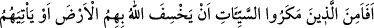
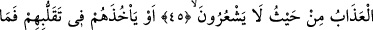
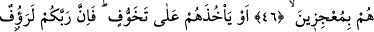
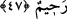

TUZAK KURANLAR
EMİN Mİ OLDULAR?
45. Kötülük tuzakları kuranlar, Allah’ın, kendilerini yere geçirmeyeceğinden
veya kendilerine bilemeyecekleri bir yerden azabın gelmeyeceğinden emin mi
oldular?
46. Yahut onlar dönüp dolaşırlarken Allah’ın kendilerini yakalamayacağından
emin mi oldular? Onlar (Allah’ı) âciz bırakacak değillerdir.
47. Yoksa Allah’ın kendilerini yavaş yavaş tüketerek cezalandırmayacağından
(emin mi oldular)? Şüphesiz Rabbin çok şefkatli, pek merhametlidir.
“Kötülük tuzakları kuranlar,” Onlar, Allah Rasûlü (s.a.)’e tuzak kuran ve ashâbını
îmandan vazgeçirmeyi arzulayan Mekke müşrikleridir. Onlar İslâm’ı ortadan kaldırmak
için tuzaklar kurdular.
Cümlenin takdiri şöyledir: “Onlar hiç düşünmediler mi ve emin mi oldular da
haklarında anlatılan kötülük tuzaklarını kurdular.” Ya da: “Onlar kötülükleri yapanlar,
küfür ve mâsıyetleri işleyenler,” demektir.
“Allah’ın kendilerini yere geçirmeyeceğinden” Karun ve adamlarının başına geldiği
gibi yerin en alt tabakasına sokana kadar onları dibe doğru çekip batırmasından,
demektir.
Hâfız zikreder ki turna, iki ayağı ile değil tek ayağıyla yere basar. Diğer ayağı üzerine
de basacak olsa yerin kendisini batırmasından korktuğu için onun üzerine dayanmaz.
Kuş bile yere batmaktan emin olmayınca gaflet içinde yeryüzünde yürüyen akıl sâhibi
insanın hali nice olur?!
“Veya kendilerine” geleceğini “bilemeyecekleri bir yerden” yâni, onlar gaflet
hâlindeyken “azabın gelmeyeceğinden emin mi oldular?”
Ey Hâfız, gördün mü o kekliğin salınarak kahkahasını
Ki kazâ şâhininin pençesinden gâfil oldu